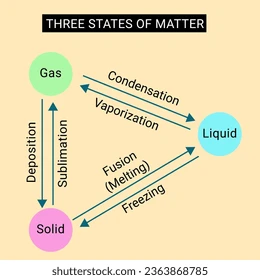

Ch1-Matter In Our Surroundings
Note: The highlighted explanations are more likely to be asked in tests or exams
Introduction
Everything in this universe is made up of material called 'matter'.
Matter can be classified into two types based on their physical and chemical nature.
physical nature of matter:
Matter is made up of particles.The particles of matter are very small - They are very small beyond our imagination.
Characteristics of particles of matter:
- Particles of matter have space between them.
- Particles of matter have space between them.
- Particles of matter are continuosly moving that means they possess kinetic energy.
- As the temperature increases the kinetic energy of the particles also increases which means the particles move faster.
- The intermixing of particles of different types of matter is known as "diffusion" - Very important.
- Particles of matter attract each other.
- Particles of matter have force between them which keeps them together.
States of matter:
There are three states of matter- Solid, Liquid, Gas.
The solid state:
- In solids, the particles are very closely packed.
- The particles in solids have very less kinetic energy.
- Solids have a definite shape and volume.
- Solids are incompressible.
- Solids have high density compared to liquids and gases.
The liquid state:
- In liquids, the particles are less closely packed compared to solids.
- The particles in liquids have more kinetic energy than solids.
- Liquids have a definite volume but no definite shape.
- Liquids are nearly incompressible.
- Liquids have lower density compared to solids but higher than gases.
- liquids have greater space between the particles compared to solids.
- Liquids flow and change shape, so they are called "fluids".
- Solid, liquids and gases can diffuse into liquids.
- The rate of diffusion in liquids is higher than that of solids.
The gaseous state
- In gases, the particles are very far apart.
- The particles in gases have high kinetic energy.
- Gases have neither definite shape nor definite volume.
- Gases are compressible.
- Gases have very low density compared to solids and liquids.
- Gases fill the entire volume of the container in which they are kept.
- Gases diffuse quickly compared to solids and liquids.
The rate of diffusion increases as the temperature increases. Example:The small of hot cooked food reaches us much faster than that of cold food, because the rate of diffusion increases as the temperature increases.
Gases exert pressure on the walls of the container in which they are kept.
Can matter change its state?
Yes, matter can change its state from one form to another by heating or cooling.
Effect of change of temperature:
On increasing the temperature of solids, the kinetic energy of the particles increases, and they start vibrating more and more. The energy supplied by heat overcomes the force of attraction between the particles. A stage is reached when the particles break free from their fixed positions and the solid melts to form a liquid.
The melting point of a solid is an indication of the strength of the forces of attraction between its particles.
The melting point of ice is 273.15K.
Kelvin (K) is the SI unit of temperature. 0°C = 273.15K. For convenience, we take 273K as 0°C.
- Conversion of kelvin to celsius:
- k - 273= C°
- Conversion of celsius to kelvin:
- C° + 273= K
The minimum temperature at which a solid melts to become a liquid at atmospheric pressure is called its "Melting point".
For example, we take ice cubes in a beaker and start to heat them. In this expriment we can observe that the temperature of the ice cubes does not change after reaching the melting point till all the ice melts because the heat energy was used up in changing the state by overcoming the forces of attraction between the particles. This is called latent heat. The word latent means hidden.
- The amount of heat energy required to change 1kg of a solid into liquid at atmospheric pressure at its melting point is known as latent heat of fusion.
- The amount of heat energy required to change 1kg of a liquid into gas at atmospheric pressure at its boiling point is known as latent heat of fusion.
The temperature at which a liquid starts boiling at the atmospheric pressure is known as its boiling point. Boiling is a bulk phenomenon.
Interconversion of the three states of matter:

- The process in which the solid state changes into liquid state is known as "Fusion" or "Melting".
- The process in which the liquid state changes into gaseous state is known as "Vaporisation".
- The process in which the gaseous state changes into liquid state is known as "Condensation".
- The process in which the liquid state changes into solid state is known as "Solidification" or "Freezing".
- The process in which the gaseous state changes into solid state is known as "Deposition".
- The process in which the solid state changes into gaseous state is known as "Sublimation".
Effect of change of pressure
Applying pressure and reducing temperature can liquefy gases.
Solid carbondioxide turns directly into gaseous state without melting on decrease of pressure to 1 atmosphere. This is why solid carbondioxide is called as 'dry ice'.
Pressure and temperature determine the state of a substance.
Evaporation:
The phenomenon of change of liquid into vapours at any tempeature below its boiling point is called "Evaporation".
Factors affecting evaporation:
- Surface area: Evaporation increases with increase in surface area.
- Temperature: Evaporation increases with increase in temperature.
- Humidity: Evaporation decreases with increase in humidity.
- Wind speed: Evaporation increases with increase in wind speed.
Cooling effect of evaporation:
When a liquid evaporates, the particles of that liquid absorb energy from the Surroundings to regain the energy lost during evaporation. This absorption of energy from the Surroundings make the Surroundings cold.
Why should we wear cotton clothes in summer?In summer, the sweat produced from our body evaporates quickly due to high temperature. During evaporation, the sweat absorbs heat energy from our body to regain the energy lost during evaporation. This makes our body cool. Cotton clothes absorb sweat and allow it to evaporate quickly. Hence, we feel cool when we wear cotton clothes in summer.
Why do we see water droplets on the outer surface of a glass containg ice-cold water?When we take out a glass containing ice-cold water, the outer surface of the glass becomes cold. The water vapour present in the Surroundings comes in contact with the cold surface of the glass and loses its heat energy to the glass. Due to loss of heat energy, the water vapour changes into liquid water droplets.